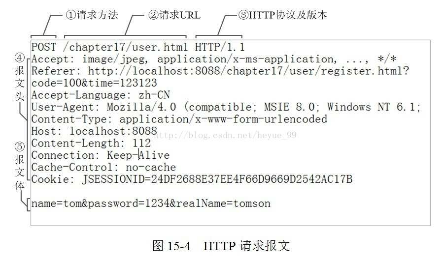

<!DOCTYPE HTML>
<html lang="zh-CN">
<head><meta name="generator" content="Hexo 3.8.0">
    <!--Setting-->
    <meta charset="UTF-8">
    <meta name="viewport" content="width=device-width, user-scalable=no, initial-scale=1.0, maximum-scale=1.0, minimum-scale=1.0">
    <meta http-equiv="X-UA-Compatible" content="IE=Edge,chrome=1">
    <meta http-equiv="Cache-Control" content="no-siteapp">
    <meta http-equiv="Cache-Control" content="no-transform">
    <meta name="renderer" content="webkit|ie-comp|ie-stand">
    <meta name="apple-mobile-web-app-capable" content="我的博客 - blog">
    <meta name="apple-mobile-web-app-status-bar-style" content="black">
    <meta name="format-detection" content="telephone=no,email=no,adress=no">
    <meta name="browsermode" content="application">
    <meta name="screen-orientation" content="portrait">
    <link rel="dns-prefetch" href="https://lives.xtcgch.ink">
    <!--SEO-->

<meta name="description" content="脑容量不够，笔记来凑">


<meta name="robots" content="all">
<meta name="google" content="all">
<meta name="googlebot" content="all">
<meta name="verify" content="all">
    <!--Title-->


<title>【原理】 网络通信之HTTP(S) | 我的博客 - blog</title>


    <link rel="alternate" href="/atom.xml" title="我的博客 - blog" type="application/atom+xml">


    <link rel="icon" href="https://blog.xtcgch.ink/img/background/海绵宝宝.ico">

    


<link rel="stylesheet" href="/css/bootstrap.min.css?rev=3.3.7">
<link rel="stylesheet" href="/css/font-awesome.min.css?rev=4.5.0">
<link rel="stylesheet" href="/css/style.css?rev=@@hash">


    


    

</head>

</html>
<!--[if lte IE 8]>
<style>
    html{ font-size: 1em }
</style>
<![endif]-->
<!--[if lte IE 9]>
<div style="ie">你使用的浏览器版本过低，为了你更好的阅读体验，请更新浏览器的版本或者使用其他现代浏览器，比如Chrome、Firefox、Safari等。</div>
<![endif]-->

<body>
    <header class="main-header" style="background-image:url(https://blog.xtcgch.ink/img/head-bg.jpg)">
    <div class="main-header-box">
        <a class="header-avatar" href="/" title="unistd68">
            
        </a>
        <div class="branding">
        	<!--<h2 class="text-hide">Snippet主题,从未如此简单有趣</h2>-->
            
                <h2> 脑容量不够，笔记来凑 </h2>
            
    	</div>
    </div>
</header>
    <nav class="main-navigation">
    <div class="container">
        <div class="row">
            <div class="col-sm-12">
                <div class="navbar-header"><span class="nav-toggle-button collapsed pull-right" data-toggle="collapse" data-target="#main-menu" id="mnav">
                    <span class="sr-only"></span>
                        <i class="fa fa-bars"></i>
                    </span>
                    <a class="navbar-brand" href="https://lives.xtcgch.ink">我的博客 - blog</a>
                </div>
                <div class="collapse navbar-collapse" id="main-menu">
                    <ul class="menu">
                        
                            <li role="presentation" class="text-center">
                                <a href="/"><i class="fa "></i>主页</a>
                            </li>
                        
                            <li role="presentation" class="text-center">
                                <a href="/categories/原理/"><i class="fa "></i>原理</a>
                            </li>
                        
                            <li role="presentation" class="text-center">
                                <a href="/categories/实战/"><i class="fa "></i>实战</a>
                            </li>
                        
                            <li role="presentation" class="text-center">
                                <a href="/categories/开源/"><i class="fa "></i>开源</a>
                            </li>
                        
                            <li role="presentation" class="text-center">
                                <a href="/categories/其他/"><i class="fa "></i>其他</a>
                            </li>
                        
                            <li role="presentation" class="text-center">
                                <a href="/archives/"><i class="fa "></i>时间轴</a>
                            </li>
                        
                    </ul>
                </div>
            </div>
        </div>
    </div>
</nav>
    <section class="content-wrap">
        <div class="container">
            <div class="row">
                <main class="col-md-8 main-content m-post">
                    <p id="process"></p>
<article class="post">
    <div class="post-head">
        <h1 id="【原理】 网络通信之HTTP(S)">
            
	            【原理】 网络通信之HTTP(S)
            
        </h1>
        <div class="post-meta">
    
    
    <span class="categories-meta fa-wrap">
        <i class="fa fa-folder-open-o"></i>
        <!-- <a href="https://blog.xtcgch.ink/categories/原理"> -->
        <a href="/categories/原理">
            原理
        </a>
    </span>
    

    
    <span class="fa-wrap">
        <i class="fa fa-tags"></i>
        <span class="tags-meta">
            
                
                    <!-- <a href="https://blog.xtcgch.ink/tags/网络" title='网络'> -->
                    <a href="/tags/网络" title="网络">
                        网络
                    </a>
                
                    <!-- <a href="https://blog.xtcgch.ink/tags/前端" title='前端'> -->
                    <a href="/tags/前端" title="前端">
                        前端
                    </a>
                
                    <!-- <a href="https://blog.xtcgch.ink/tags/HTTP" title='HTTP'> -->
                    <a href="/tags/HTTP" title="HTTP">
                        HTTP
                    </a>
                
            
        </span>
    </span>
    

    
        
        <span class="fa-wrap">
            <i class="fa fa-clock-o"></i>
            <span class="date-meta">2018/11/22</span>
        </span>
        
    
</div>

            
            
            <p class="fa fa-exclamation-triangle warning">
                本文于<strong>1106</strong>天之前发表，文中内容可能已经过时。
            </p>
        
    </div>
    
    <div class="post-body post-content">
        <p>http应该是每个做过网络编程的程序员都应该去了解的一个协议，只是根据自身业务和职业方向来决定是否深入专研还是浅尝辄止。对于我来说，只需要初步理解http的原理就可以了。</p>
<a id="more"></a>
<hr>
<h2 id="简介"><a href="#简介" class="headerlink" title="简介"></a>简介</h2><ul>
<li>HTTP协议（Hyper Text Transfer Protocol，超文本传输协议）,是用于从万维网（WWW:World Wide Web ）服务器传输超文本到本地浏览器的传送协议。</li>
<li>HTTP基于TCP/IP通信协议来传递数据。</li>
<li>HTTP基于客户端/服务端（C/S）架构模型，通过一个可靠的链接来交换信息，是一个无状态的请求/响应协议。</li>
</ul>
<h2 id="请求体"><a href="#请求体" class="headerlink" title="请求体"></a>请求体</h2><p></p>
<h2 id="请求方法"><a href="#请求方法" class="headerlink" title="请求方法"></a>请求方法</h2><ul>
<li>HEAD: 仅请求响应首部</li>
<li>GET: 完整请求一个资源 （常用</li>
<li>PUT: (webdav) 上传文件（但是浏览器不支持该方法）</li>
<li>POST：提交表单  （常用）</li>
<li>DELETE：(webdav) 删除</li>
<li>TRACE: 追求一个资源请求中间所经过的代理（该方法不能由浏览器发出）</li>
<li>OPTIONS：返回请求的资源所支持的方法的方法</li>
</ul>
<h2 id="状态码"><a href="#状态码" class="headerlink" title="状态码"></a>状态码</h2><p>1xx: 信息性状态码,表示服务器已接收了客户端请求，客户端可继续发送请求</p>
<figure class="highlight plain"><table><tr><td class="gutter"><pre><span class="line">1</span><br></pre></td><td class="code"><pre><span class="line">100, 101</span><br></pre></td></tr></table></figure>
<p>2xx: 成功状态码,</p>
<figure class="highlight plain"><table><tr><td class="gutter"><pre><span class="line">1</span><br></pre></td><td class="code"><pre><span class="line">200：OK</span><br></pre></td></tr></table></figure>
<p>3xx: 重定向状态码,表示服务器要求客户端重定向</p>
<figure class="highlight plain"><table><tr><td class="gutter"><pre><span class="line">1</span><br><span class="line">2</span><br><span class="line">3</span><br><span class="line">4</span><br><span class="line">5</span><br></pre></td><td class="code"><pre><span class="line">301: 永久重定向, Location响应首部的值仍为当前URL，因此为隐藏重定向;</span><br><span class="line"></span><br><span class="line">302: 临时重定向，显式重定向, Location响应首部的值为新的URL</span><br><span class="line"></span><br><span class="line">304：Not Modified  未修改，比如本地缓存的资源文件和服务器上比较时，发现并没有修改，服务器返回一个304状态码，告诉浏览器，你不用请求该资源，直接使用本地的资源即可。</span><br></pre></td></tr></table></figure>
<p><strong>附注</strong>：</p>
<p>服务器给浏览器响应一个301永久重定向响应，这样浏览器就会访问<code>http://www.facebook.com/</code>而非<code>http://facebook.com/</code>。</p>
<p>为什么服务器一定要重定向而不是直接发送用户想看的网页内容呢？</p>
<p>其中一个原因跟<strong>搜索引擎排名</strong>有关。</p>
<p>如果一个页面有两个地址，就像<code>http://www.igoro.com/</code>和<code>http://igoro.com/</code>，搜索引擎会认为它们是两个网站，结果造成每个搜索链接都减少从而降低排名。</p>
<p>而搜索引擎知道301永久重定向是什么意思，这样就会把访问带www的和不带www的地址归到同一个网站排名下。</p>
<p>还有就是用不同的地址会造成缓存友好性变差，当一个页面有好几个名字时，它可能会在缓存里出现好几次。</p>
<p>4xx: 客户端错误状态码，表示客户端的请求有非法内容</p>
<figure class="highlight plain"><table><tr><td class="gutter"><pre><span class="line">1</span><br><span class="line">2</span><br><span class="line">3</span><br><span class="line">4</span><br><span class="line">5</span><br><span class="line">6</span><br><span class="line">7</span><br></pre></td><td class="code"><pre><span class="line">400 Bad Request 表示客户端请求有语法错误，不能被服务器所理解</span><br><span class="line"></span><br><span class="line">401 Unauthonzed 表示请求未经授权，该状态代码必须与 WWW-Authenticate 报头域一起使用</span><br><span class="line"></span><br><span class="line">403 Forbidden 表示服务器收到请求，但是拒绝提供服务，通常会在响应正文中给出不提供服务的原因</span><br><span class="line"> </span><br><span class="line">404: Not Found  请求的URL资源并不存在</span><br></pre></td></tr></table></figure>
<p>5xx: 服务器端错误状态码，表示服务器未能正常处理客户端的请求而出现意外错误</p>
<figure class="highlight plain"><table><tr><td class="gutter"><pre><span class="line">1</span><br><span class="line">2</span><br><span class="line">3</span><br><span class="line">4</span><br><span class="line">5</span><br></pre></td><td class="code"><pre><span class="line">500: Internal Server Error  服务器内部错误</span><br><span class="line"></span><br><span class="line">502: Bad Gateway  前面代理服务器联系不到后端的服务器时出现</span><br><span class="line"></span><br><span class="line">504：Gateway Timeout  这个是代理能联系到后端的服务器，但是后端的服务器在规定的时间内没有给代理服务器响应</span><br></pre></td></tr></table></figure>
<h2 id="请求过程"><a href="#请求过程" class="headerlink" title="请求过程"></a>请求过程</h2><p>1、域名解析</p>
<p>2、浏览器与web服务器建立一个 TCP 连接</p>
<p>3、浏览器给Web服务器发送一个http请求</p>
<p>4、服务器的永久重定向响应</p>
<ul>
<li>考虑代理服务器的重定向</li>
<li>考虑路由器的重定向</li>
</ul>
<p>5、浏览器跟踪重定向地址</p>
<p>6、服务器“处理”请求</p>
<ul>
<li>考虑缓存</li>
</ul>
<p>7、服务器发回一个HTML响应</p>
<p>8、客户端浏览器解析HTML内容</p>
<p>9、浏览器获取嵌入在HTML中的对象</p>

    </div>
    
    <div class="post-footer">
        <div>
            
        </div>
        <div>
            
        </div>
    </div>
</article>

<div class="article-nav prev-next-wrap clearfix">
    
        <a href="/2018/11/22/数据结构之排序/" class="pre-post btn btn-default" title="【专项】 数据结构之排序">
            <i class="fa fa-angle-left fa-fw"></i><span class="hidden-lg">上一篇</span>
            <span class="hidden-xs">【专项】 数据结构之排序</span>
        </a>
    
    
</div>


    <div id="comments">
        
    
    <div id="vcomments" class="valine"></div>
    <script src="//cdn1.lncld.net/static/js/3.0.4/av-min.js"></script>
<script src="/assets/valine.min.js"></script>

    <script>
        new Valine({
            av: AV,
            el: '#vcomments',
            appId: 'XWA5gq7VCJybw7YQhf5HG20r-gzGzoHsz',
            appKey: '8FW1WEwrysHXaUD1bhGn2Rp8',
            placeholder: '说点什么吧',
            notify: true,
            verify: false,
            avatar: 'https://blog.xtcgch.ink/img/comment-avatar.jpg',
            meta: 'nick,mail'.split(','),
            pageSize: '10',
            path: window.location.pathname,
            lang: 'zh-CN'.toLowerCase()
        })
    </script>


    </div>


                </main>
                
                    <aside id="article-toc" role="navigation" class="col-md-4">
    <div class="widget">
        <h3 class="title">文章目录</h3>
        
            <ol class="toc"><li class="toc-item toc-level-2"><a class="toc-link" href="#简介"><span class="toc-text">简介</span></a></li><li class="toc-item toc-level-2"><a class="toc-link" href="#请求体"><span class="toc-text">请求体</span></a></li><li class="toc-item toc-level-2"><a class="toc-link" href="#请求方法"><span class="toc-text">请求方法</span></a></li><li class="toc-item toc-level-2"><a class="toc-link" href="#状态码"><span class="toc-text">状态码</span></a></li><li class="toc-item toc-level-2"><a class="toc-link" href="#请求过程"><span class="toc-text">请求过程</span></a></li></ol>
        
    </div>
</aside>

                
            </div>
        </div>
    </section>
    <footer class="main-footer">
    <div class="container">
        <div class="row">
        </div>
    </div>
</footer>

<a id="back-to-top" class="icon-btn hide">
	<i class="fa fa-chevron-up"></i>
</a>


    <div class="copyright">
    <div class="container">
        <div class="row">
            <div class="col-sm-12">
                <div class="busuanzi">
    
</div>

            </div>
            <div class="col-sm-12">
                <span>Copyright &copy; 2018
                </span> |
                <span>
                    Powered by <a href="//hexo.io" class="copyright-links" target="_blank" rel="nofollow">Hexo</a>
                </span> |
                <span>
                    Theme by <a href="//github.com/shenliyang/hexo-theme-snippet.git" class="copyright-links" target="_blank" rel="nofollow">Snippet</a>
                </span>
            </div>
        </div>
    </div>
</div>


<script src="/js/app.js?rev=@@hash"></script>

</body>
</html>